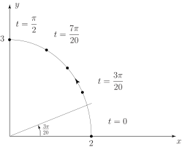

Long description: fig1_3

Alt text: A graph shows a curve plotted on a Cartesian coordinate system, with labeled values for the parameter t indicating the path of the curve.
This description was generated by AI and has not been verified by a human. If you spot an error, please use the feedback link below.
- The image displays a two-dimensional graph with the horizontal axis labeled \(x\) and the vertical axis labeled \(y\).
- The curve itself is smooth and concave down, starting from the top left and curving downward and to the right, suggesting a path traced over a parameter \(t\).
- Several points are marked along the curve, and arrows indicate the direction of motion as the parameter \(t\) increases from \(t = 0\) to \(t = \frac{3\text{pi}}{20}\).
- At the starting point, corresponding to \(t = 0\), the curve intersects the horizontal axis at the point \((2, 0)\).
- The y-axis intercepts the curve at the point \((0, 3)\) when the parameter is \(t = \frac{\text{pi}}{2}\).
- A marked point on the curve corresponds to the parameter \(t = \frac{7\text{pi}}{20}\), which is located in the first quadrant.
- The curve is terminated or tracked until the parameter reaches \(t = \frac{3\text{pi}}{20}\), indicating the endpoint of the visible segment of the curve.